- Оперативна пам'ять DDR5
- Оверклокерська дисципліна
- Radeon RX 6500 XT
- GeForce RTX 4090 та RTX 4080
- Ігрові консолі Steam Deck
- Що готує наступний рік?
Цей рік видався для України дуже непростим. Збожеволілий сусід напав на нас, окупував частину країни та продовжує вбивати наших людей та руйнувати наші міста. Заради своїх імперських амбіцій рф готова покласти сотні тисяч своїх ваньок, але ми не здаємося та даємо гідну відсіч ворогу. Попри руйнування інфраструктури, які завдає нам сусід, ми продовжуємо працювати. Іноді буває важко, але перші, найстрашніші, пів року війни ми вже пройшли.
Команда Overclockers.ua також продовжує працювати та радувати наших читачів свіжими новинами та оглядами новітніх розробок, хоча через блекаути не завжди вдається щось зробити вчасно. Огляди новинок вже закінчилися, тому перейдемо до останнього матеріалу 2022 року, а саме підсумків.
За традицією, підбивання підсумків року у світі апаратного забезпечення почнемо з процесорів для персональних комп'ютерів. За останні 12 місяців Intel та AMD встигли вивести на ринок чимало цікавих рішень. Обидва чипмейкери розпочали 2022-й з релізу нових поколінь мобільних процесорів. Intel явила світові лінійку енергоефективних чипів Core 12-го покоління , на що AMD відповіла випуском гібридних процесорів Ryzen 6000 з покращеною мікроархітектурою Zen 3.
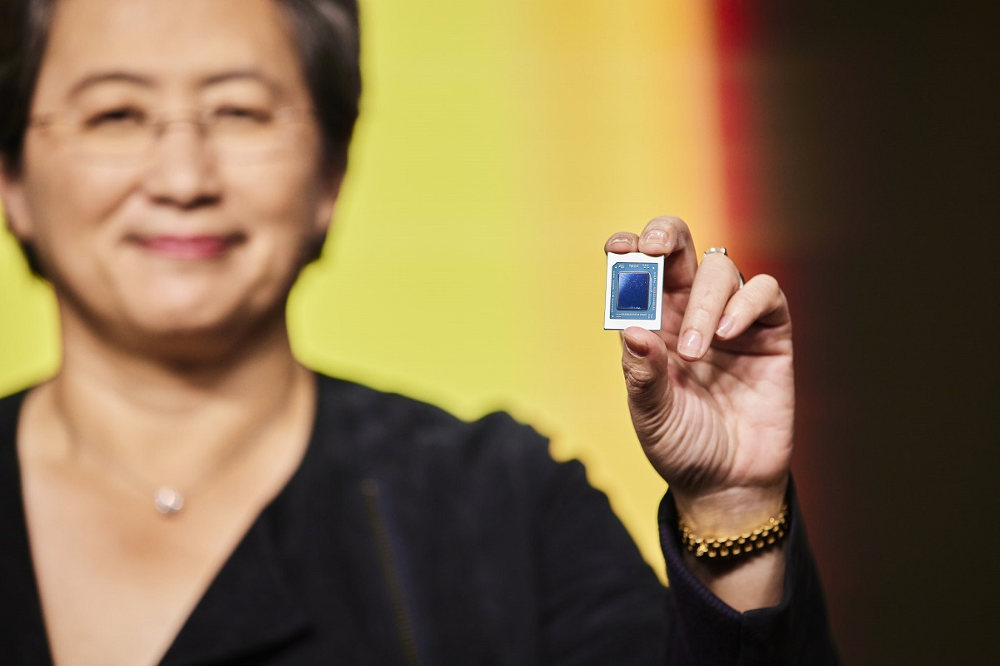У мобільних чипах Core 12-го покоління, як і в настільних, Intel використала два види x86-ядер: високопродуктивні Golden Cove та енергоефективні Gracemont. Топові рішення з теплопакетом 28 або 45 Вт мають формулу «6+8», тобто оперують 14 ядрами/20 потоками. Наприкінці весни відбувся дебют сімейства Alder Lake-HX із формулою аж до «8+8». Ці процесори можуть запропонувати 16 ядер/24 потоки та, власне кажучи, є настільними чипами в конструктивному виконанні BGA.
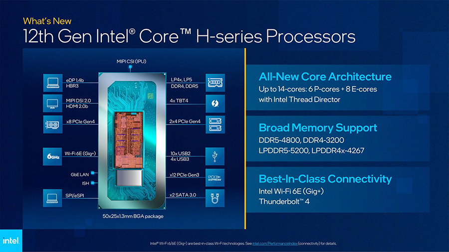Водночас AMD вирішила, що ноутбукам на сьогодні достатньо 8-ядерних/16-потокових процесорів. Саме така конфігурація характерна для топових APU Ryzen 6000. Ці процесори перекочували на мікроархітектуру Zen 3+, отримали графічний блок RDNA 2-го покоління і контролер пам'яті DDR5-5200/LPDDR5-6400. Доречі, для «червоних» це перші чипи з підтримкою оперативної пам'яті DDR5, тоді як Intel вже встигла випробувати її в настільній платформі LGA1700.
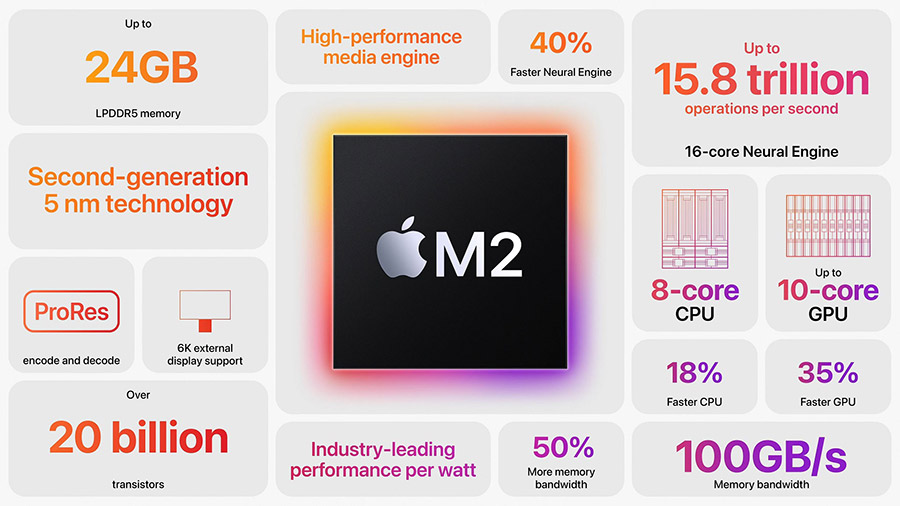Розповідаючи про енергоефективні процесори, буде не зайвим згадати новинки Apple. Купертинівці цього року порадували любителів «яблучних» комп'ютерів релізом процесора M1 Ultra для робочої станції Mac Studio, а також M2 для лептопів MacBook Air/Pro та планшетів iPad Pro. Перший чип фактично є «склейкою» з двох процесорів M1 Max, пропонуючи вдвічі більше ARM-ядер, обчислювальних блоків GPU та інших модулів. Apple M2 — подальший розвиток процесора M1, випущеного у 2020 році. Для нього характерні покращення по всіх напрямках, чи то енергоефективність, продуктивність CPU-блоку чи графіки.
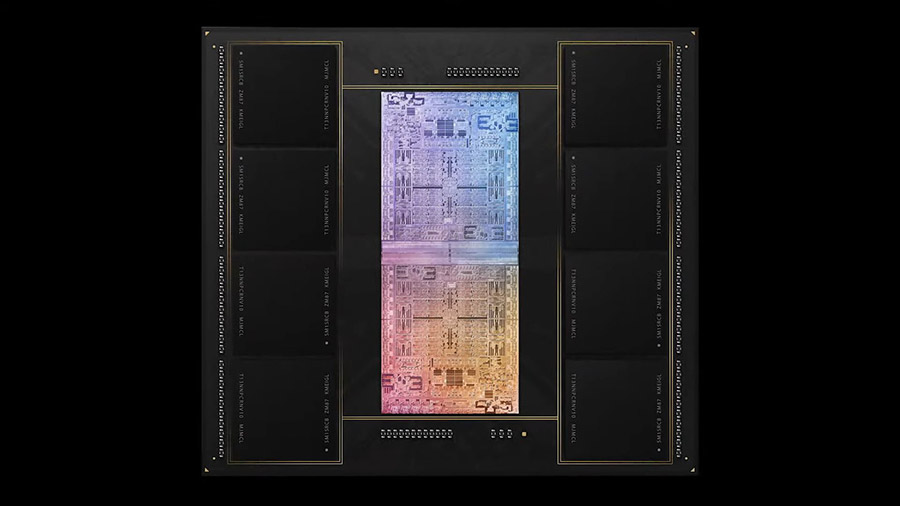Але повернемося до x86-процесорів. Intel та AMD не забули про розширення асортименту чипів для настільних масових платформ. На початку року дебютувала лінійка чипів Core 12-го покоління із заблокованим множником, які, як з'ясувалося пізніше, непогано піддаються розгону через підвищення опорної частоти. AMD тим часом випустила шість недорогих CPU Ryzen 4000/5000 серії, причому в молодших чипах використані кристали від APU Renoir, тобто засновані вони на архітектурі Zen 2. Паралельно з цим офіційна підтримка Ryzen 5000 стала з'являтися на платах з логікою A320/B350/X370
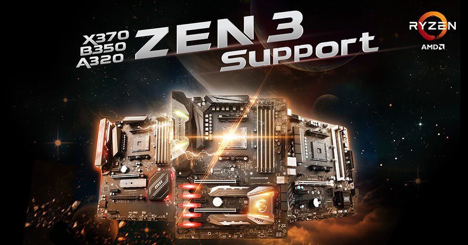Окремої уваги заслуговують так звані «найкращі ігрові процесори». На початку квітня Intel вивела на ринок Core i9-12900KS, головна особливість якого криється у збільшених частотах Turbo Boost — до 5,5 ГГц на «великих» ядрах. AMD відповіла на нього випуском Ryzen 7 5800X3D із технологією 3D V-Cache, яка дозволила збільшити об'єм L3-кешу до 96 Мбайт, що позитивно позначилося на швидкодії в іграх. В цілому, обидва процесори можна рекомендувати на роль основи ігрової системи high-end рівня, проте Ryzen 7 5800X3D все ж виграє на тлі конкурента внаслідок меншої ціни та підтримки старими материнськими платами.
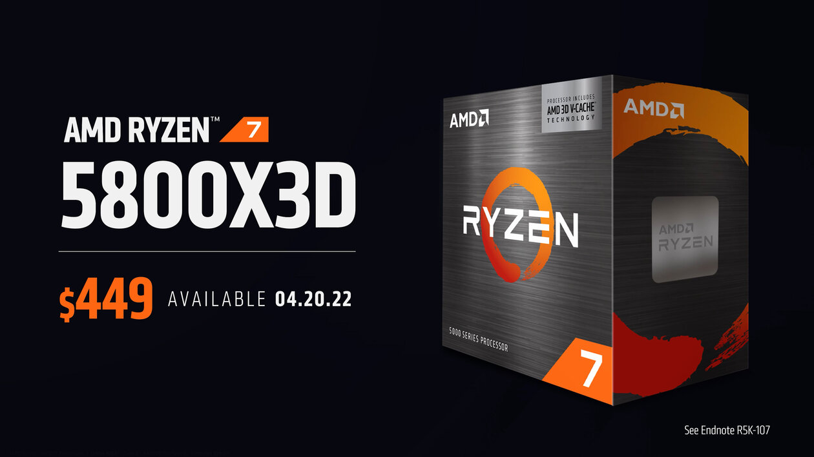З цікавих новинок CPU-ринку варто згадати процесори Ryzen Threadripper 5000WX для платформи sWRX8. У їхньому арсеналі є до 64 ядер Zen 3 з boost-частотою до 4,5 ГГц, 8-канальний контролер DDR4-3200 та до 256 Мбайт кеш-пам'яті L3. А ось оновлення асортименту чипів для платформи sTRX4 не було. Її власникам офіційно доступні лише CPU Zen 2, хоча деяким ентузіастам все ж таки пощастило провести експерименти з інженерними зразками невипущених процесорів.
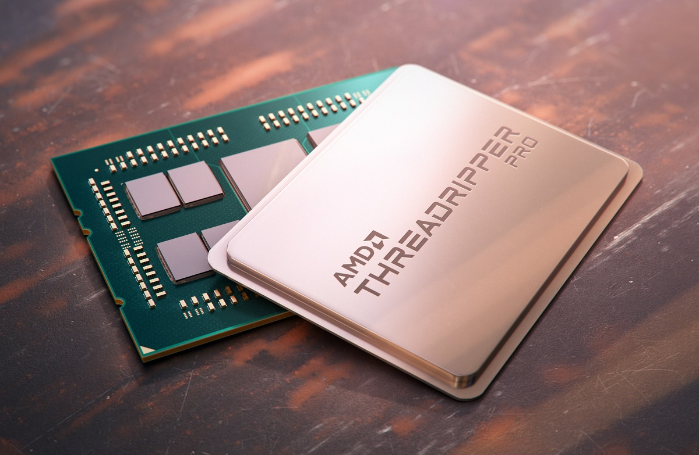Головною подією другої половини року можна назвати реліз масової платформи AMD AM5 та процесорів Ryzen 7000 на мікроархітектурі Zen 4 . Вона принесла з собою підтримку оперативної пам'яті DDR5 (модулі DDR4 не підтримуються), високошвидкісного інтерфейсу PCI Express 5.0 і сокет формату Land Grid Array. Процесори Ryzen 7000 виявилися відчутно швидше за попередників, проте знайти популярність їм завадила дорожнеча платформи. До того ж стару добру AM4, особливо геймерський Ryzen 7 5800X3D, ще рано списувати з рахунків.
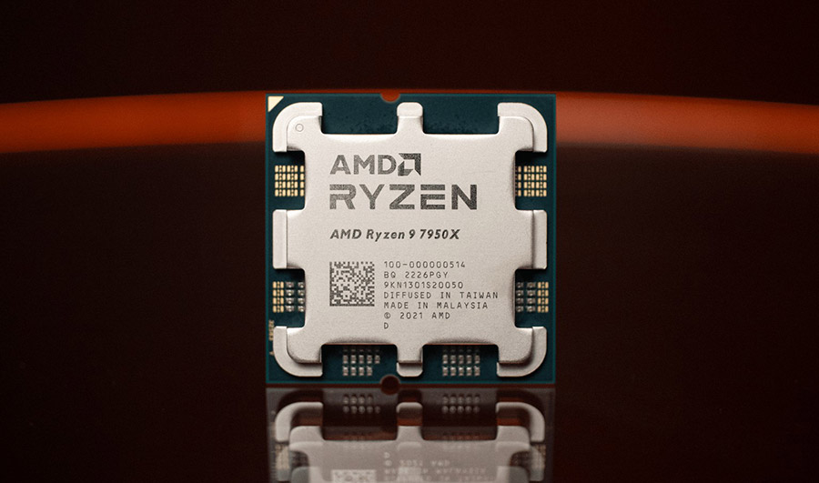Звісно, вихід нової платформи AMD не залишився поза увагою Intel. Процесорний гігант відповів на нього випуском старших процесорів Core 13-го покоління . Флагманський Core i9-13900K збільшив кількість ядер до 24 штук, щоправда, 16 з них виконані на енергоефективній архітектурі Gracemont. Разом із приростом тактових частот це дозволило йому випередити у багатьох завданнях «червоного» візаві Ryzen 9 7950X, при цьому найбільша перевага спостерігається в іграх. Тут варто згадати «гарячу вдачу» нових CPU Intel, проте потужної системи охолодження потребують і нові чипи AMD.
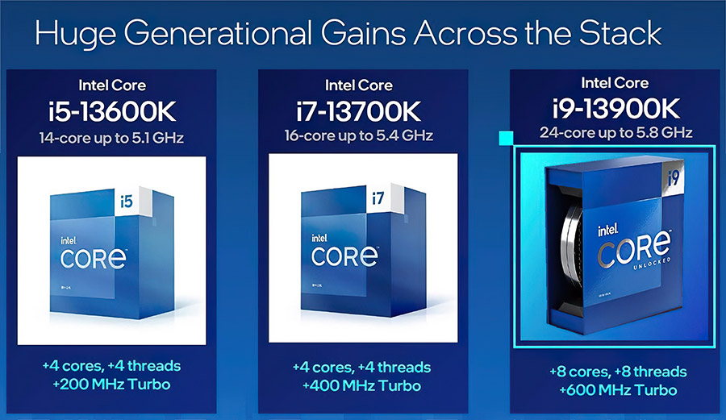Острівцем стабільності в останні роки можна назвати сегмент серверних x86-процесорів. З кожним кварталом AMD «відкушує» в Intel невелику частину ринку, причому з кінця 2020-го її частка зросла з 7,1% до 17,5% (дані Mercury Research). На відміну від «синього» конкурента, AMD випускає нові покоління серверних чипів із регулярністю, якій можна позаздрити. Весною дебютували CPU Milan-X зі збільшеним до 768 Мбайт об'ємом L3-кешу, а восени в продаж надійшли процесори EPYC 9004 , які можуть запропонувати до 96 ядер Zen 4 і 12-канальний контролер DDR5. Разом з тим Intel випустить нове покоління Xeon Scalable лише у січні.
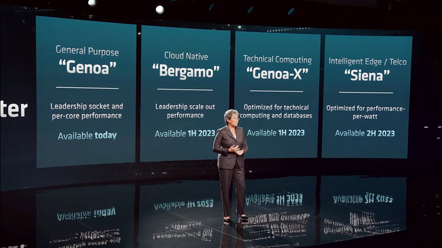Середина грудня запам'яталася новим абсолютним рекордом в оверклокерській дисципліні CPU Frequency. Команді майстрів спортивного розгону під керівництвом Джона «elmor» Сандстрома вдалося «розкочегарити» Intel Core i9-13900K до частоти 9008,82 МГц. Варто додати, що довгий час лідерами цієї дисципліни залишалися чипи AMD. Рекорд 8722,78 МГц на процесорі FX-8370, встановлений фінським оверклокером The Stilt ще у 2014 році, не вдавалося побити аж до виходу CPU Core 13-го покоління.
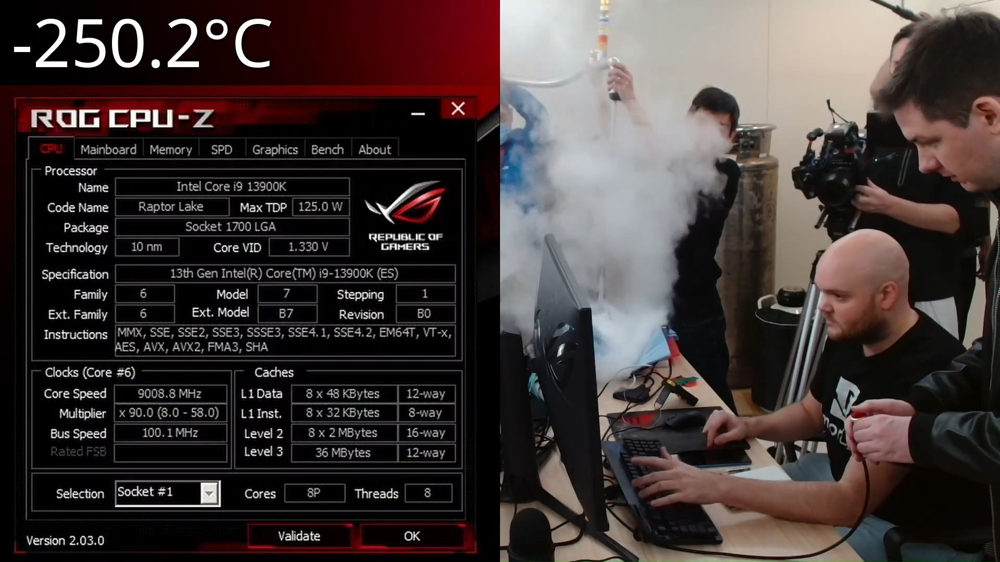Для галузі дискретної графіки цей рік видався дуже плідним. AMD і Nvidia почали його з розширення асортименту 3D-прискорювачів минулого покоління, причому йдеться про нові рішення як для десктопів, так і для ноутбуків. У рамках CES 2022 відбулася презентація мобільних GeForce RTX 3070 Ti та RTX 3080 Ti , а команда Лізи Су анонсувала відразу сім нових відеоадаптерів Radeon RX 6000-ї серії . Детально про них ми розповідали у відповідних матеріалах.
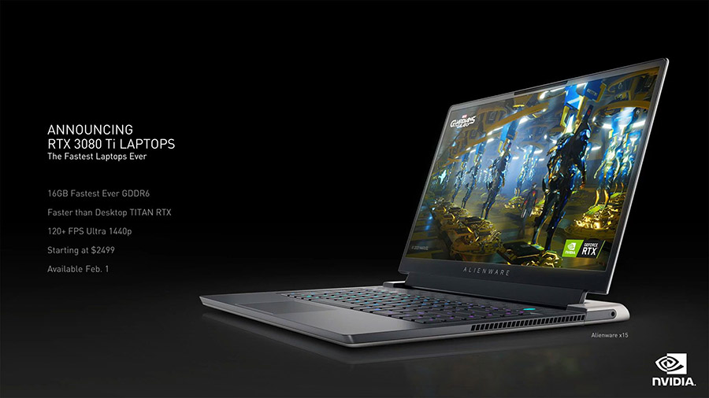У сегменті настільних відеокарт січень запам'ятався виходом GeForce RTX 3050 — найдоступнішого пристрою з архітектурою Nvidia Ampere. Ця модель, грубо кажучи, є урізаною на третину GeForce RTX 3060. Її продуктивність, як показали тести, виявилася нижчою, ніж GeForce RTX 2060, а ціна через криптовалютну лихоманку злетіла до невиправдано високого рівня. Втім, те саме стосується всіх доступних на той момент відеокарт. У січні також відбувся реліз 12-гігабайтної версії GeForce RTX 3080, яка за швидкодією лише трохи випереджає попередницю.
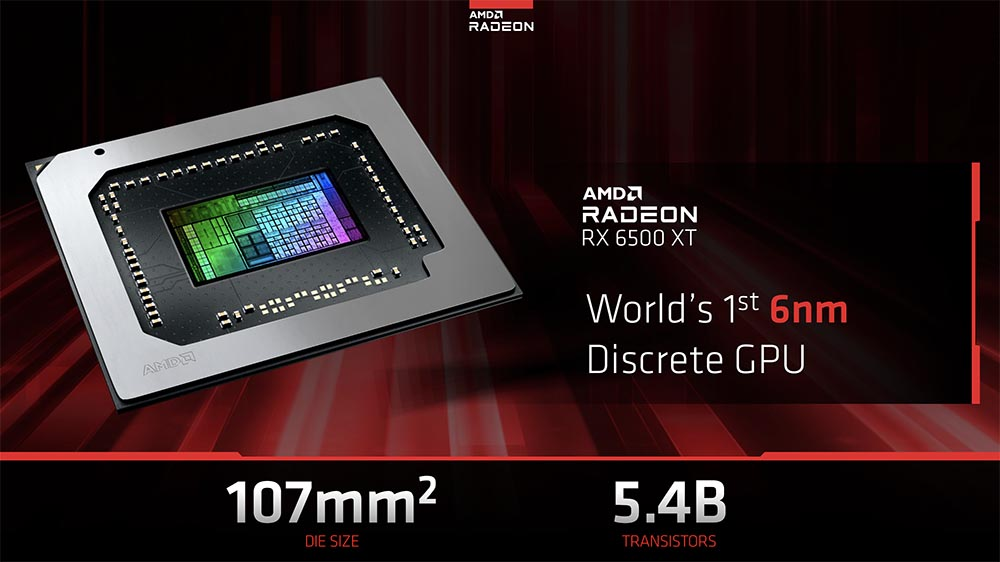AMD тим часом вивела на ринок карту початкового рівня Radeon RX 6500 XT . Її основою послужив 6-нм графічний процесор Navi 24, який спочатку був розрахований на використання в мобільних відеоадаптерах. Цей 3D-прискорювач показав, наскільки важливою є пропускна здатність інтерфейсу PCI Express. Річ у тім, що новинка оснащена лише чотирма лініями PCI-E 4.0, через що в системах із PCI-E версії 3.0 спостерігається падіння продуктивності. Іншими словами, для апгрейду старого комп'ютера краще придивитися до інших рішень. Те ж саме стосується моделі Radeon RX 6400 з аналогічним GPU.
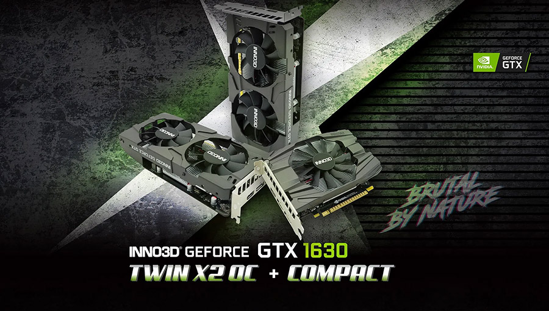Справедливо відзначити, що критику також зазнала нова бюджетна відеокарта від Nvidia. Модель GeForce GTX 1630 виявилася не сильно дешевшою за повноцінну GeForce GTX 1650, але разом з цим істотно поступається їй за продуктивністю. Виною тому не лише менша кількість ядер CUDA, але й урізана до 64 розрядів шина пам'яті.
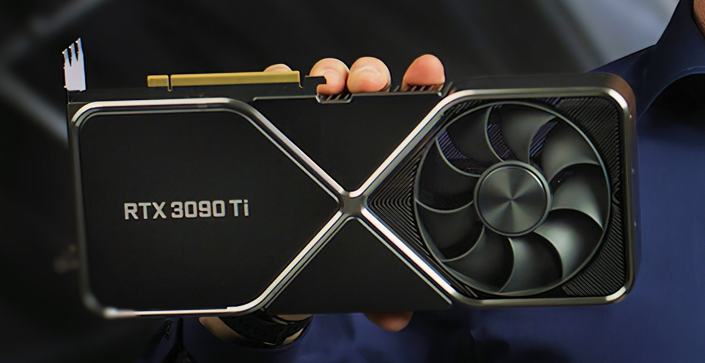Навесні побачила світ флагманська відеокарта GeForce RTX 3090 Ti. У ній Nvidia застосувала повноцінну версію графічного чипа GA102, високошвидкісні мікросхеми GDDR6X та (12+4)-контактний роз'єм 12VHPWR, про який ми поговоримо нижче. Рекомендована ціна новинки була встановлена на рівні від 1999 доларів. Щоправда, незабаром після виходу AIB-партнери «зелених» були змушені вдатися до знижок, а вже восени звання найпотужнішої відеокарти Nvidia перейшло флагману Ada Lovelace.
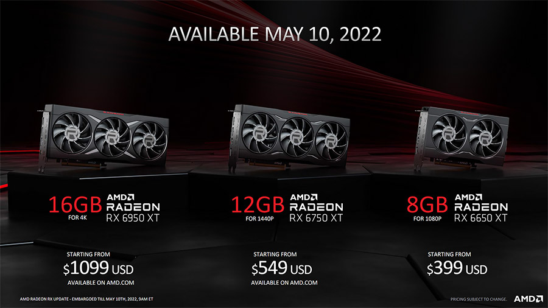Компанія AMD теж не сиділа без діла. Спеціалісти Radeon Technologies Group підготували оновлення асортименту 3D-прискорювачів RDNA 2-го покоління у формі трійці відеокарт Radeon RX 6x50 XT. Від випущених раніше моделей вони відрізняються збільшеними частотами GPU та пам'яті, а також вищими апетитами. Це забезпечило новинкам приріст швидкодії до 10%, наприклад, топова Radeon RX 6950 XT непогано конкурує з вищезгаданою GeForce RTX 3090 Ti.
Цього року відбувся багатоочікуваний дебют ігрових відеокарт Intel. Про наміри скласти конкуренцію AMD та Nvidia у цьому сегменті процесорний гігант оголосив ще у 2018 році, а цієї весни були офіційно представлені перші 3D-прискорювачі Intel Arc Alchemist. Їхній реліз пройшов, м'яко кажучи, зі скрипом. Чипмейкер не зумів випустити новинки у розпал криптовалютної лихоманки, коли геймери зраділи б будь-якій ігровій відеокарті. У результаті топові моделі Arc A750 і A770, що становлять найбільший інтерес, надійшли на ринок лише восени.
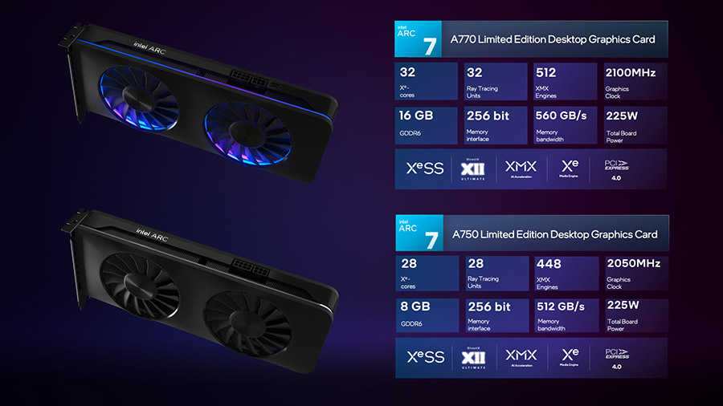Графічні прискорювачі Intel Arc A750 і A770 позиціюються як суперники GeForce RTX 3060 (Ti) і Radeon RX 6650 XT. Це загалом підтверджують незалежні тести новинок, проте все залежатиме від конкретного переліку ігор. Нюанс в тому, що при розробці програмного забезпечення відеокарт Intel приділила першочергову увагу сучасним графічним API DirectX 12 і Vulkan. В них 3D-прискорювачі Arc Alchemist демонструють найкращу продуктивність. Ігри на старіших API теж запускаються, але швидкодія найчастіше залишає бажати кращого. Хай там що, фахівці Intel ще мають чимало роботи з доопрацювання ПЗ та лікування всіх «дитячих хвороб» відеокарт Arc.
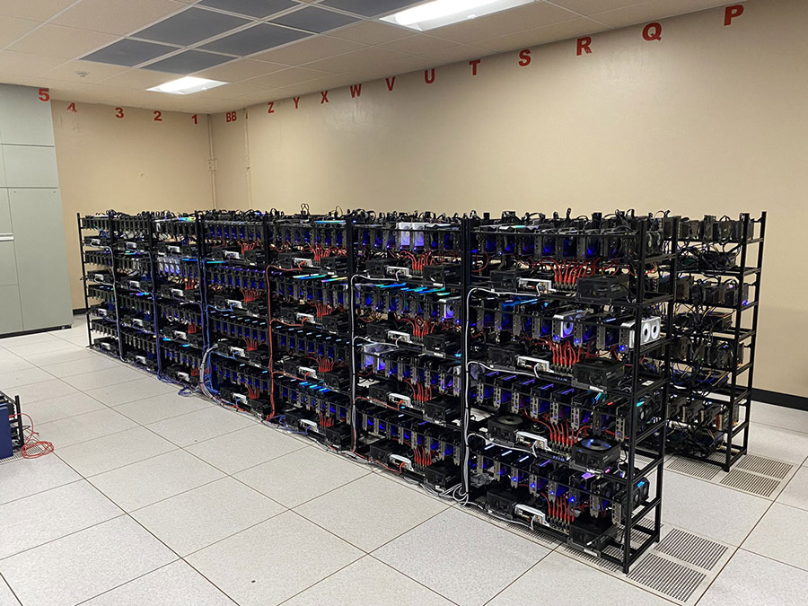
Важливою подією для ринку відеокарт стало завершення криптовалютної лихоманки. Цьому сприяло як падіння курсів
більшості криптовалют, так і
перехід Ethereum
, найпопулярнішого альткоїна серед GPU-майнерів, на модель
Proof-of-Stake. В результаті на вторинний ринок ринула величезна хвиля відеокарт минулих поколінь, а розробники
графічних процесорів зіткнулися з падінням доходів, наприклад, виторг Nvidia на майнінговому ігровому напрямку
впав вдвічі відносно минулого року. Незабаром після цього з графічного драйвера «зелених» зник захист від
майнінговому Nvidia Lite Hash Rate, щоправда, на той час це вже було марним — його обійшли ще навесні.
Однією з найцікавіших новинок осені, безумовно, є відеокарти GeForce RTX 4090 та RTX 4080 — перші представники сімейства Nvidia Ada Lovelace. У нових графічних процесорах «зелені» більш ніж у півтора раза наростили кількість обчислювальних блоків щодо GPU минулого покоління, а кількість транзисторів у флагманському чипі взагалі збільшилася майже втричі — з 28,3 до 76,3 млрд. Це забезпечило новинкам значний приріст швидкодії, зокрема топова GeForce RTX 4090 відмінно підійде для 4K-геймінгу з високою частотою кадрів.
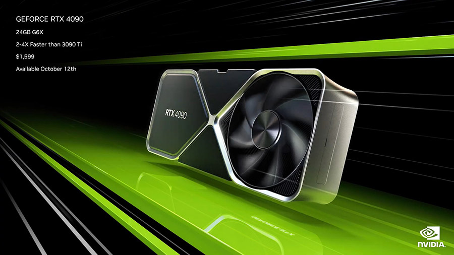Є у нових GeForce RTX й недоліки. До них відноситься досить високе енергоспоживання: паспортні 450 Вт для GeForce RTX 4090 і 320 Вт у GeForce RTX 4080. Власники флагманської моделі можуть зіткнутися з оплавленням (12+4)-контактного роз'єму додаткового живлення 12VHPWR. Nvidia списує це на неправильне підключення, проте незадоволені власники вже почали подавати судові позови. Про результати цих розглядів ми дізнаємося наступного року.
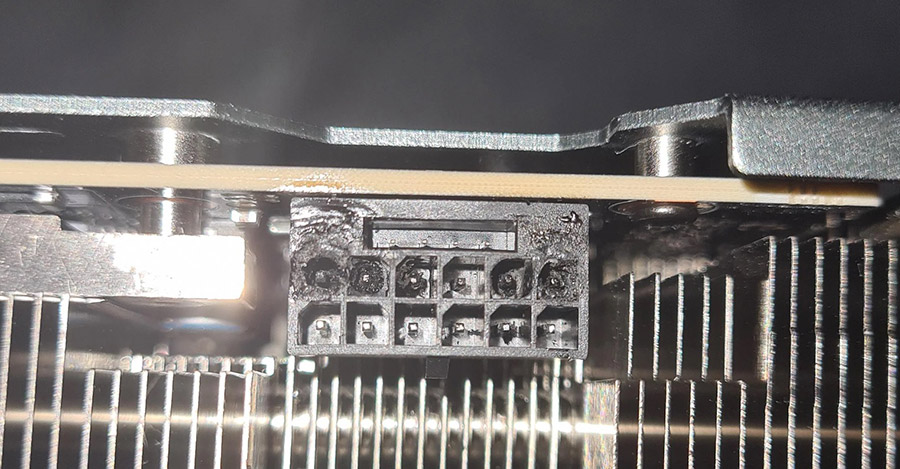Також не можна не згадати галас навколо 12-гігабайтної версії GeForce RTX 4080. Вона була представлена разом із «правильною» 16-гігабайтною модифікацією, але суттєво програвала старшій сестрі за конфігурацією як буфера GDDR6X, так і графічного процесора. Це підняло хвилю невдоволення ПК-ентузіастів, внаслідок чого Nvidia вирішила скасувати її випуск. Очікується, що 12-гігабайтна GeForce RTX 4080 вийде під маркуванням GeForce RTX 4070 Ti вже найближчими тижнями.
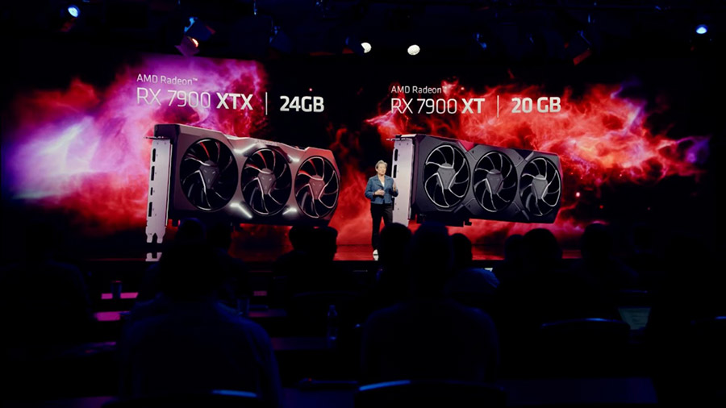У грудні компанія AMD вивела на ринок перші відеокарти RDNA 3-го покоління: Radeon RX 7900 XT та Radeon RX 7900 XTX. Відмінною рисою новинок став багаточиповий графічний процесор. У ядрі Navi 31 чипмейкер об'єднав великий 5-нм кристал Graphics Compute Die, в якому знаходяться всі обчислювальні блоки GPU, та шість 6-нм чиплетів Memory Cache Die з буфером Infinity Cache та контролерами пам'яті GDDR6. Про основні особливості графічного процесора Navi 31 ми розповідали в окремому матеріалі.
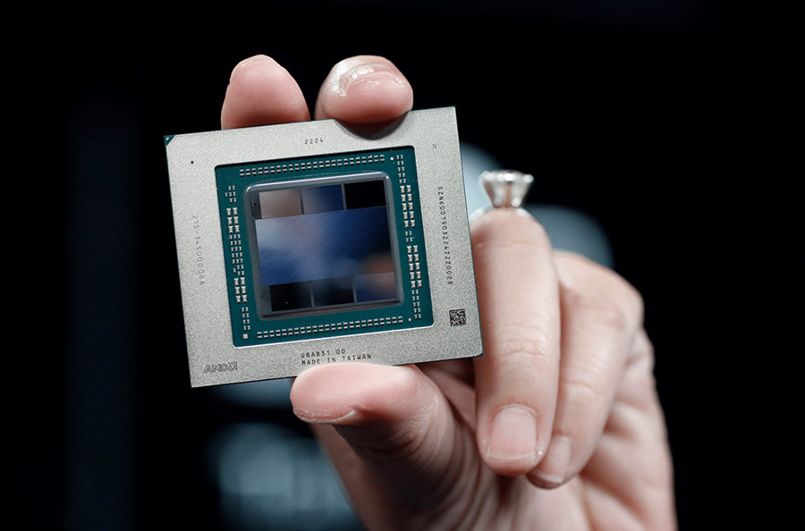Старша відеокарта покликана скласти конкуренцію моделі GeForce RTX 4080 і, як показують незалежні тести, справляється з цим завданням. Слабким місцем нових AMD Radeon є ефекти на базі трасування променів. В іграх з Ray Tracing лідерство, як і раніше, за «зеленими» відеоадаптерами. Також варто додати, що ПК-ентузіасти залишилися незадоволеними ціною молодшої моделі. При нижчій на 10% рекомендованої вартості, за продуктивністю вона слабша старшої сестри більш ніж на 10%. Сподіватимемося, що AMD незабаром виправить цю несправедливість.
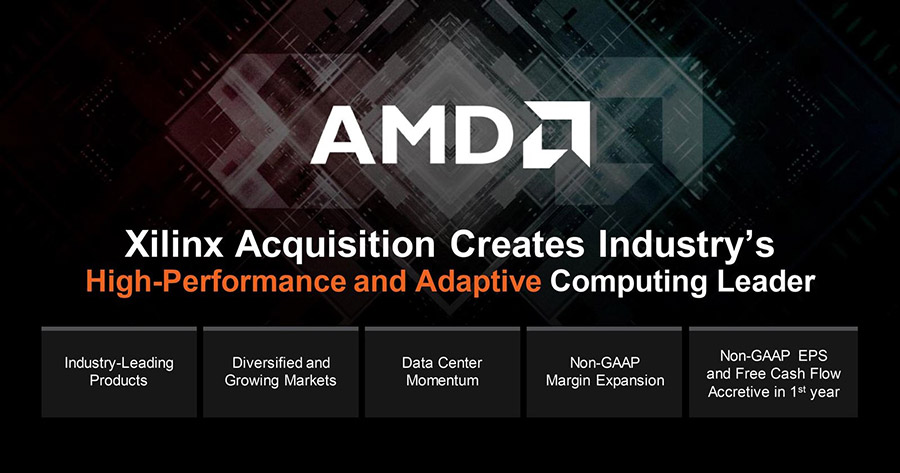Говорячи про компанію AMD, варто згадати поглинання виробника FPGA-матриць Xilinx. Воно завершилося в середині лютого, до того ж пройшло без фактичних грошових виплат — фірми просто обмінялися акціями. Акціонерам AMD дісталися 74% об'єднаної компанії, а 26%, що залишилися, контролюють колишні акціонери Xilinx. Водночас для Nvidia угода щодо придбання ARM Limited завершилася безрезультатно . Точніше, «зелені» втратили понад мільярд доларів, наданих японській фірмі SoftBank як аванс. Все через занепокоєння регулюючих органів та великих технологічних компаній, які використовують напрацювання ARM.
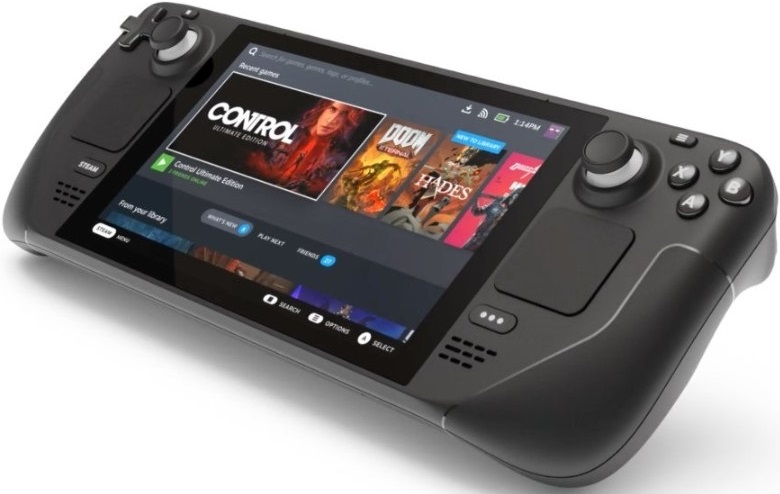Наприкінці зими компанія Valve розпочала постачання ігрової консолі Steam Deck . Спочатку вона планувала випустити пристрій у грудні минулого року, проте постала перед труднощами під час виробництва. Нагадаємо, що в основі Steam Deck лежить однокристальна система AMD, про її характеристики можна дізнатися з окремого матеріалу . Ігровий сервіс Valve також став доступним на інформаційно-розважальній системі електромобілів Tesla. У середині місяця для Model X і S вийшло оновлення, яке відкрило власникам доступ до тисяч проєктів з бібліотеки Steam.
Оперативну пам'ять Double Data Rate 5 ще не можна назвати по-справжньому масовою, але це лише питання часу. Роздрібні ціни потроху йдуть вниз (хоча до рівня планок DDR4 ще далеко), а виробники продовжують поліпшувати характеристики модулів DDR5. Цього року їм вдалося досягти ефективної частоти 8000 МГц на серійних планках, причому ще минулої осені для цього знадобився б випарник рідкого азоту. Екстремальні оверклокери тим часом переступили позначку 11 ГГц, в чому їм допомогла оновлена платформа Intel LGA1700.
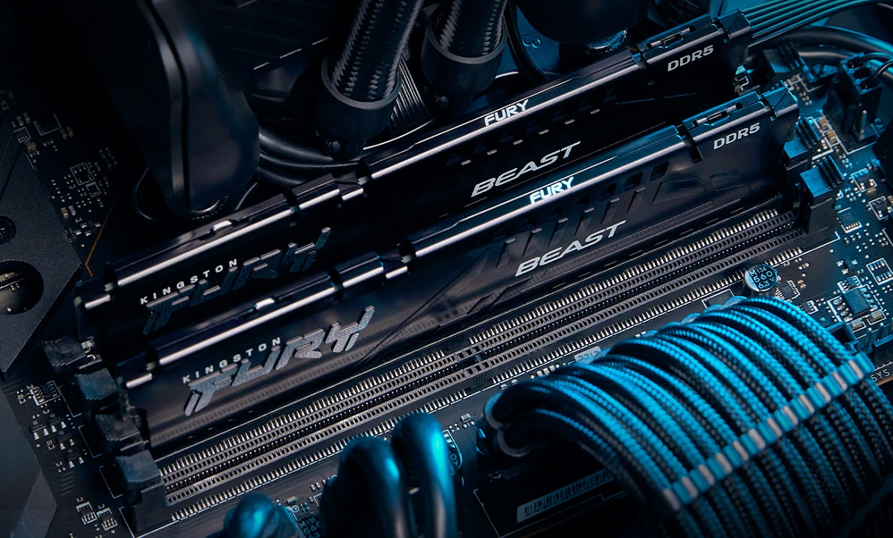Щодо ринку енергонезалежної пам'яті, то тут спостерігається відносна стабільність. Виробники 3D NAND не перестають нарощувати кількість шарів у мікросхемах, а твердотілі накопичувачі продовжують дешевшати, радуючи цим рядових споживачів. З важливих подій можна виділити припинення випуску накопичувачів Intel Optane на основі перспективної пам'яті 3D XPoint. Для процесорного гіганта цей напрямок бізнесу видався збитковим і, наприклад, лише за 2020 рік приніс $576 мільйонів збитків. Лебединою піснею сімейства Intel Optane стали накопичувачі Optane P5810X для серверного ринку.
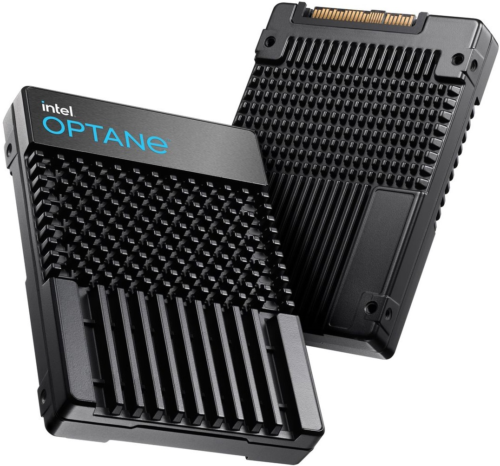В Україні за останній рік з'явилося чимало цікавого «заліза», щоправда, більша його частина призначена збройним силам. З-поміж цікавих новинок, доступних цивільному населенню, варто відзначити систему супутникового інтернет-зв'язку Starlink. Її офіційний запуск на території України відбувся на початку війни, коли почалися постачання терміналів Міністерству оборони та Мінцифри. Незабаром після цього Starlink став доступним звичайним українцям, які бажають під'єднатися до супутникового інтернету власним коштом.
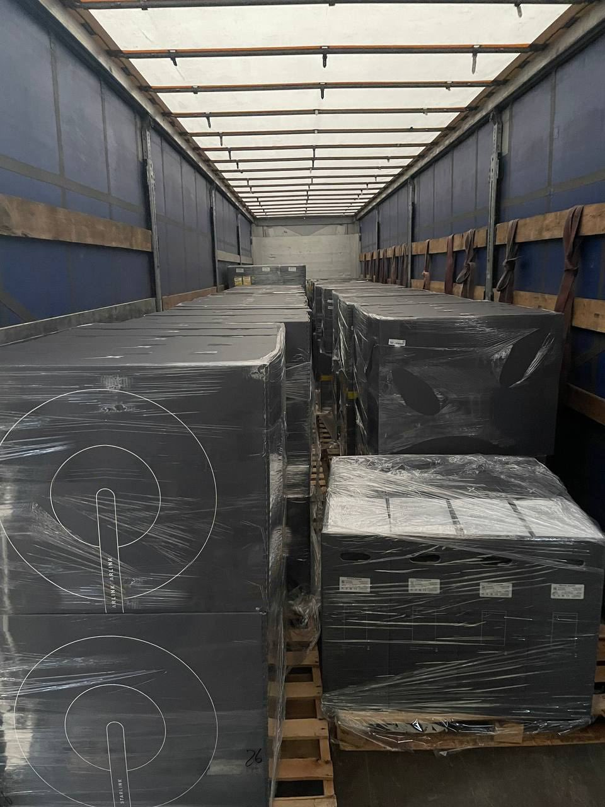